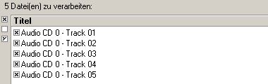
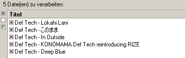
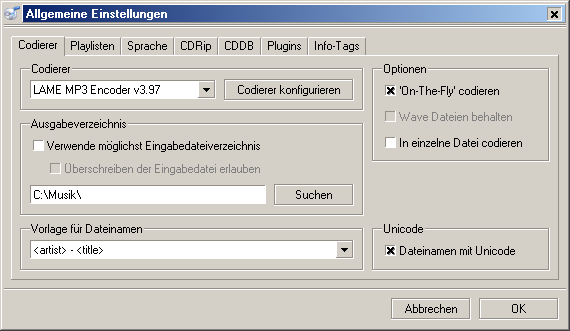
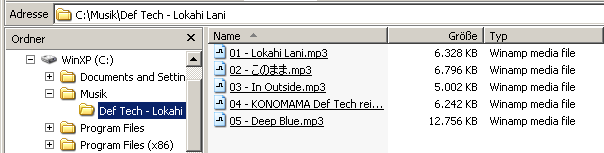
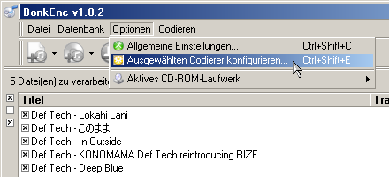

Laden Sie die neueste Version von fre:ac von SourceForge oder von der fre:ac-Homepage herunter. Installieren Sie das Programm und starten Sie es. Legen Sie nun eine Audio-CD in Ihr CD/DVD-Laufwerk ein. Die einzelnen Titel werden normalerweise automatisch in das Hauptfenster von fre:ac geladen. Falls dies nicht geschieht, klicken Sie das Symbol "Audio-CD-Inhalt zur Liste hinzufügen" in der Toolbar an, um die Tracks zur Jobliste hinzuzufügen.
Da wir die Titelinformationen nicht für jeden Track manuell eingeben möchten, können wir einfach die freedb-Datenbank im Internet abfragen. Die Titelinformationen werden dann automatisch ergänzt. Dazu klicken Sie einfach im Menü "Datenbank" auf den Eintrag "CDDB-Datenbank abfragen". Daraufhin sollte sich folgendes Fenster öffnen:

Das Programm übernimmt die Titelinformationen automatisch:
Anschließend sollten wir die allgemeinen Programmeinstellungen anpassen. Wählen Sie den Eintrag "Allgemeine Einstellungen" aus dem Menü "Optionen". Daraufhin wird der folgende Dialog angezeigt:
Auf der ersten Seite kann der Kodierer ausgewählt werden. fre:ac verwendet standardmäßig den LAME MP3-Kodierer, welchen wir auch in diesem Tutorial verwenden werden. Überprüfen Sie, ob die Option "'On-The-Fly' kodieren" ausgewählt ist, und aktivieren Sie sie gegebenenfalls. Stellen Sie dann das Ausgabeverzeichnis auf das Verzeichnis ein, in dem die MP3-Dateien gespeichert werden sollen.
Im Eingabefeld für die Dateinamensvorlage kann eingestellt werden, wie die Dateinamen formatiert werden sollen. Ich lege meine Dateien in Verzeichnissen mit dem Künstler- und Albumnamen ab und verwende als Dateinamen die Tracknummern und Titel. Die entsprechende Dateinamensvorlage lautet "<artist> - <album>\<track> - <title>". In diesem Fall werden die Dateinamen also folgendermaßen aussehen:
Erfahrene Benutzer finden im Konfigurationsdialog noch viele weiter Einstellungsmöglichkeiten, die den persönlichen Vorlieben oder Anforderungen angepasst werden können.
Wir sollten jetzt den LAME-Kodierer konfigurieren, um qualitativ hochwertige MP3-Dateien zu erhalten. Wählen Sie dazu aus dem Menü "Optionen" den Eintrag "Ausgewählten Kodierer konfigurieren".
So gelangen Sie zu folgendem Dialog:

fre:ac kennt einige verschiedene Voreinstellungen für den LAME-Kodierer. Die Voreinstellungen stehen für verschiedene Einstellungen des Kodierers, die MP3-Dateien mit unterschiedlicher Qualität erzeugen. Je höher die Voreinstellung (z.B. "Extrem"), desto mehr Speicherplatz werden die MP3-Dateien auf Ihrer Festplatte einnehmen, aber desto besser werden sie auch klingen. Ich bevorzuge eigene Einstellungen vorzunehmen und alle Optionen einzeln einzustellen. Sie sollten zunächst aber die Voreinstellung auf Standard setzen. Klicken Sie auf OK, um die Einstellungen zu speichern.
Im Hauptfenster werden wir nun auswählen, welche Tracks gerippt und als MP3 kodiert werden sollen. Links neben den einzelnen Einträgen der Jobliste befindet sich eine kleine Checkbox. Die Tracks, die in dieser Box ein × haben, werden gerippt und kodiert. Wenn Sie nur einige Tracks rippen wollen, wählen Sie die übrigen mit einem Klick auf diese Box ab.
Sie können jetzt den großen Play-Knopf anklicken und damit die Konvertierung starten.

In der unteren Hälfte des Fensters wird nun eine Fortschrittsleiste angezeigt:

Sobald ein Titel fertiggestellt ist, wird die Jobliste (dort wo alle Titel angezeigt werden) automatisch aktualisiert.
Herzlichen Glückwunsch! Sie haben soeben Ihre erste CD mit fre:ac gerippt und kodiert!